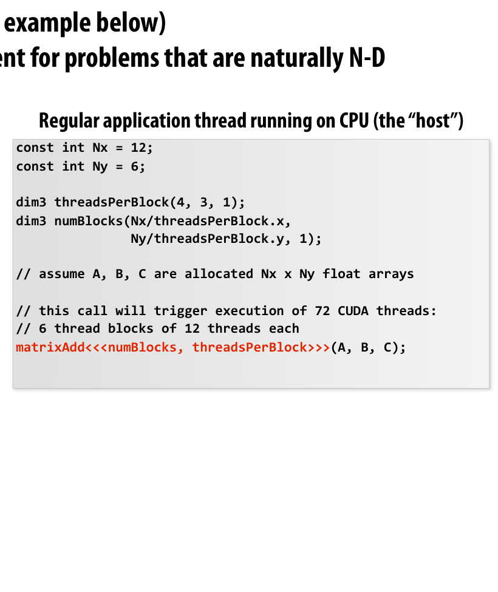
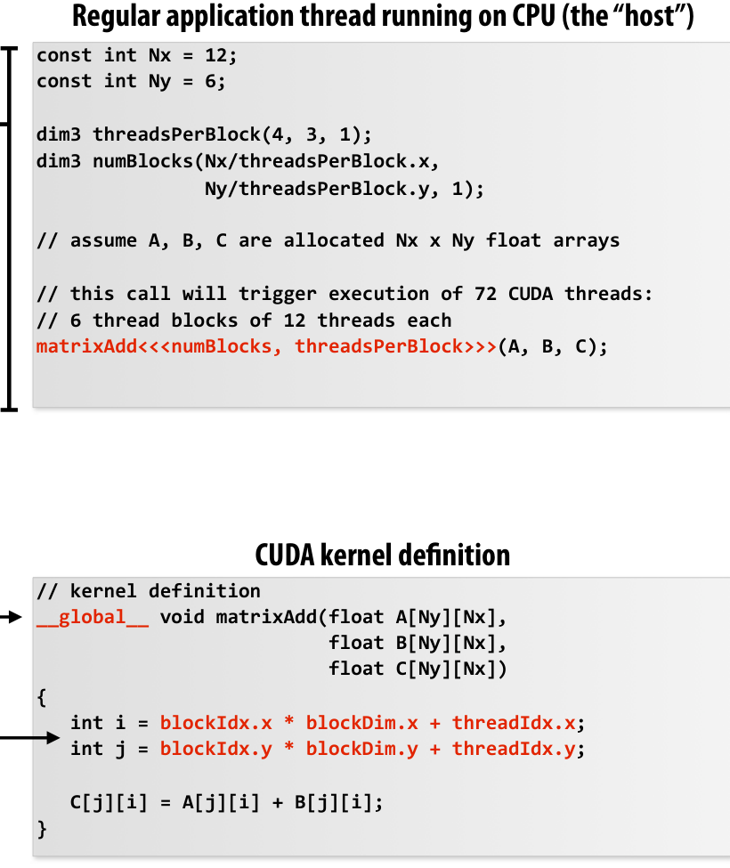
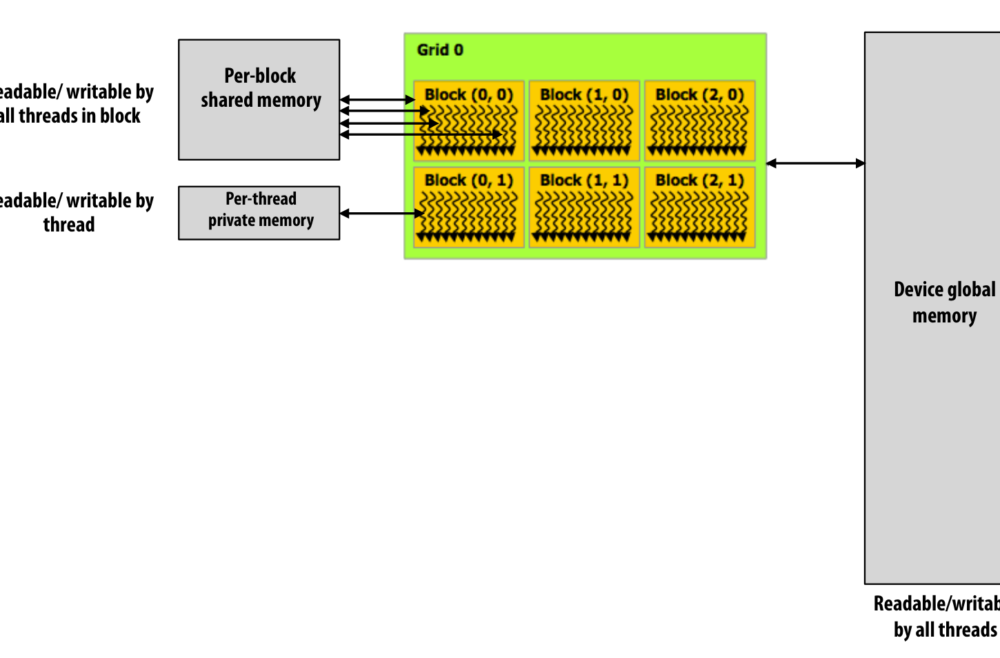
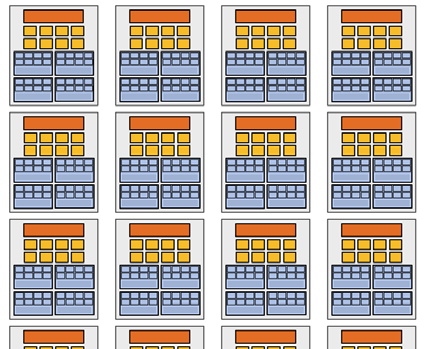
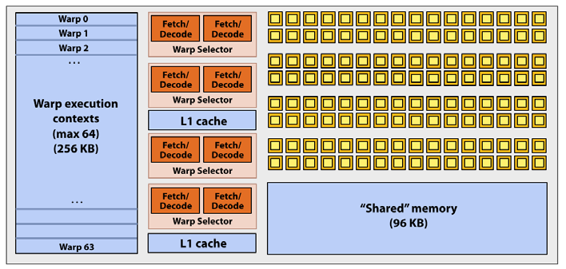

GPU Architecture & CUDA
Lecture Outline
- GPU History & GPGPU: Transition from specialized graphics accelerators to general throughput engines.
- The Graphics rendering pipeline: How graphics pipelines operate on streams (Vertices, Primitives, Fragments, Pixels).
- CUDA Programming Abstractions: Host vs. Device memory spaces, thread hierarchy (Grids, Blocks, Threads).
- Cooperative Load & Shared Memory: Staging data in shared memory to optimize global memory bandwidth.
- GPU Architecture Implementation: Streaming Multiprocessors (SMs), warps, SIMD execution, and latency hiding.
CPU vs. GPU Design Philosophies
CPU (Latency Optimized)
- Focused on executing a single thread as quickly as possible.
- Massive Caches: To reduce memory latency.
- Complex Control Logic: Branch prediction, Out-of-Order execution.
- Large ALUs: Optimized for execution speed.
GPU (Throughput Optimized)
- Focused on executing a massive number of threads in parallel.
- Massive ALU Arrays: Hundreds or thousands of execution units.
- Simple Control & Cache: Most die area is allocated to ALUs, not caches or branch prediction.
- Latency Hiding: Hides memory latency via fast hardware-level context switching.
Real-Time Graphics Pipeline: The Nouns
The pipeline abstracts rendering a 3D scene (mesh) to a 2D pixel image:
- Vertices: Points in 3D space with attributes (position, color, normals).
- Primitives: Geometric shapes formed by vertices (primarily triangles).
- Fragments: Candidates for pixels in the output image buffer (e.g. rasterized pixels with depth).
- Pixels: The final colored elements in the output image buffer.
Real-Time Graphics Pipeline: The Verbs
- Vertex Generation: Creates stream of 3D vertices.
- Vertex Processing: Projects vertices onto the screen.
- Primitive Generation: Assembles vertices into triangles.
- Rasterization: Generates fragments for pixels covered by primitives.
- Fragment Processing: Computes color based on lighting/texture.
- Pixel Operations: Resolves depth (closest fragment wins).
Programmable Shaders & Stream Model
- Modern GPUs introduce Programmable Shaders to support diverse lighting and materials programmatically.
- Shaders are mini-programs executed in parallel over streams of data:
- Vertex Shader: Custom code mapped to every vertex in a stream.
- Fragment Shader (Pixel Shader): Custom code mapped to every rasterized fragment.
The GPGPU Hack (2002 - 2003)
- The Realization: Programmable graphics cards were highly efficient, mass-market data-parallel processors.
- The GPGPU Hack: To run arbitrary scientific calculations, programmers mapped calculations into graphics pipeline primitives:
- Set output image buffer size to match output array size (e.g., 512x512).
- Draw two screen-aligned triangles covering the entire screen.
- Write computation inside the Fragment Shader.
- The GPU executes the fragment shader once per pixel, outputting the results into the image buffer (array).
- Used for ray tracing, matrix solvers, and simulations.
Brook Stream Programming (2004)
- Brook (Stanford): A research programming language designed to abstract GPU hardware as a data-parallel stream processor.
- Eliminated OpenGL/DirectX boilerplate (textures, drawing triangles).
// Brook Stream Kernel
kernel void scale(float amount, float a<>, out float b<>) {
b = amount * a;
}
// Map kernel onto stream collections
scale(scale_amount, input_stream, output_stream);- Brook compiler translated this stream code to graphics drawing calls and shaders behind the scenes.
Compute Mode & NVIDIA Tesla (2007)
- In 2007, NVIDIA introduced the Tesla Architecture (GeForce 8800) containing a non-graphics-specific Compute Mode interface.
Prior to 2007 (Graphics Mode)
- Graphics driver interface.
- Program represented as Vertex/Fragment shader programs.
- Invocation via
drawPrimitives(). - Limited to graphics pipeline abstractions.
2007+ (Compute Mode / CUDA)
- Compute-mode driver interface.
- Program represented as a single execution kernel.
- Invocation via
launch(myKernel, N). - Programmer directly manages buffers and memory spaces.
CUDA Programming Abstractions
- Host vs. Device: Clear separation between CPU (Host, serial) and GPU (Device, SPMD) execution.
- SPMD Hierarchy:
- CUDA Thread: A single logical thread of control.
- Thread Block: A cooperative group of threads. Threads in a block can synchronize and share fast on-chip memory.
- Grid: A collection of independent thread blocks launched together.
- Threads and blocks have multi-dimensional IDs (
threadIdx,blockIdx,blockDim).

Basic CUDA Syntax
Host Code (CPU):
const int Nx = 12;
const int Ny = 6;
dim3 threadsPerBlock(4, 3, 1);
dim3 numBlocks(Nx/threadsPerBlock.x,
Ny/threadsPerBlock.y, 1);
// Bulk kernel launch: 72 threads (6 blocks of 12)
matrixAdd<<<numBlocks /*grid dimension*/, threadsPerBlock/*block dimension*/>>>(A /*device pointer*/, B /*device pointer*/, C /*device pointer*/);Device Kernel (GPU):

Host vs. Device Address Spaces
- Host (CPU) memory and Device (GPU) memory are physically distinct.
- The host must explicitly allocate device memory and copy data back and forth.
float* A = new float[N]; // Host buffer
float* deviceA;
cudaMalloc(&deviceA, sizeof(float) * N); // Allocate on GPU
// Copy data: Host -> Device
cudaMemcpy(deviceA, A, sizeof(float) * N, cudaMemcpyHostToDevice);
// Run kernel on deviceA...
// Copy data: Device -> Host
cudaMemcpy(A, deviceA, sizeof(float) * N, cudaMemcpyDeviceToHost);- Note: You cannot manipulate pointers allocated in device space directly from the host.
CUDA Device Memory Model
Kernels access three distinct memory spaces:
- Private Memory: Per-thread local variables/stack registers.
- Shared Memory: On-chip, per-block read/write space visible to all threads in a block. High-bandwidth, low-latency.
- Global Memory: Off-chip DRAM visible to all threads. High-latency (400-800 cycles).

1D Convolution (Version 1: Global Memory)
Let’s compute a simple 3-point average: output[i] = (input[i] + input[i+1] + input[i+2]) / 3.f
#define THREADS_PER_BLK 128
__global__ void convolve(int N, float* input, float* output) {
int index = blockIdx.x * blockDim.x + threadIdx.x;
float result = 0.0f;
for (int i = 0; i < 3; i++)
result += input[index + i];
output[index] = result / 3.f;
}- Analysis: Each thread reads from global memory individually.
- Redundancy: Threads fetch overlapping inputs (e.g.
input[i+1]is fetched by threadiand threadi-1). - Total global memory read transactions: \(3 \times N\).
1D Convolution (Version 2: Shared Memory)
Stage input data cooperatively into shared memory to reduce global reads:
#define THREADS_PER_BLK 128
__global__ void convolve(int N, float* input, float* output) {
__shared__ float support[THREADS_PER_BLK + 2];
int index = blockIdx.x * blockDim.x + threadIdx.x;
// Cooperative load: 128 threads load 130 elements
support[threadIdx.x] = input[index];
if (threadIdx.x < 2) {
support[THREADS_PER_BLK + threadIdx.x] = input[index + THREADS_PER_BLK];
}
__syncthreads(); // Synchronize all threads in the block
float result = 0.0f;
for (int i = 0; i < 3; i++)
result += support[threadIdx.x + i]; // Fast local shared mem reads
output[index] = result / 3.f;
}- Total global memory reads reduced to \(130\) elements per block (about \(1 \times N\) overall).
CUDA Synchronization Constructs
__syncthreads(): Barrier synchronization. All threads in the block must reach this point before any are allowed to proceed.- Atomic Operations: E.g.,
atomicAdd(),atomicInc(). Perform read-modify-write on shared or global variables atomically. - Implicit Grid Synchronization: Thread blocks execute independently without dependencies. Kernel returns only after all thread blocks in the grid terminate.
Thread Block Scheduler & Work Mapping
- Independence Assumption: Thread blocks must be executable in any order (no dependencies between blocks).
- Dynamic Scheduler: A hardware scheduler dynamically maps thread blocks to Streaming Multiprocessor (SM) cores.
- Resource Constraints: The scheduler maps as many blocks to an SM as will fit within the SM’s physical resource limits (threads, registers, shared memory).

Streaming Multiprocessors & GTX 980
An NVIDIA GPU contains a collection of Streaming Multiprocessors (SMs).
Maxwell GTX 980 SM Core (SMM)
- 128 SIMD ALUs: Executes math instructions.
- 96 KB Shared Memory: Fast scratchpad.
- 64 Warp Contexts (2048 threads): Max concurrent threads on-core.
- Warp Selectors: Schedules active warps.

What is a Warp?
- Definition: On NVIDIA hardware, groups of 32 threads in a block are executed simultaneously using 32-wide SIMD execution.
- Warp is an Implementation Detail: It does not exist in the CUDA programming model abstraction!
- Branch Divergence:
- Because 32 threads share an instruction stream, if threads in a warp diverge (e.g.
if (x > 0)), the SM must serialize execution of each path. - Divergent execution reduces throughput. Keep branch logic uniform across warps!
- Because 32 threads share an instruction stream, if threads in a warp diverge (e.g.
Work Scheduling Simulation
Assume a core has contexts for 384 threads (12 warps) and 1.5 KB of Shared Memory. A kernel requires 128 threads and 520 bytes of Shared Memory per block.
Initial Mapping:
Scheduler assigns Block 0 to Core 0 (uses 128 threads, 520 B shared memory).
Scheduler assigns Block 1 to Core 1 (uses 128 threads, 520 B shared memory).
Scheduler assigns Block 2 to Core 0 (uses 128 threads, 520 B shared memory).
Scheduler assigns Block 3 to Core 1 (uses 128 threads, 520 B shared memory).Resource Constraints Met:
Core 0 now has 2 blocks active (256 threads, 1040 B shared memory).
A 3rd block (Block 4) requires 520 B of shared memory.
Adding Block 4 would require 1560 B, which exceeds the core's 1.5 KB limit.
Block 4 must wait in the scheduler queue.Dynamic Re-assignment:
Block 0 finishes on Core 0. The scheduler immediately releases its resources.
Block 4 is assigned to Core 0.Latency Hiding in GPUs
- CPU Core Approach: Minimizes latency for a single thread using complex, expensive caches and branch predictors.
- GPU Core Approach: Maximizes throughput by interleaving hundreds of active threads.
- When an active warp is stalled waiting on a memory transaction (takes 400-800 cycles), the hardware warp selector switches to another runnable warp with zero overhead.
\[\text{Required Active Warps} = \frac{\text{Memory Latency}}{\text{Instruction Throughput}}\]
- If there are enough active warps to execute instructions while others are stalled, the execution pipelines are kept full, hiding the latency completely!
Thread Constraints & Dependencies
- Why must all threads in a block reside on the SM concurrently?
- Threads within a block have dependencies (e.g.,
__syncthreads()). - If the system tried to run threads 0-127 to completion before launching 128-255, a
__syncthreads()barrier would wait forever for the unlaunched threads, causing a deadlock. - Therefore, the scheduler must guarantee that all threads in an active block are concurrently active.
Persistent Threads Programming Style
#define THREADS_PER_BLK 128
#define BLOCKS_PER_CHIP 16 * (2048/128) // Hardware-specific block count
__device__ int workCounter = 0;
__global__ void convolve(int N, float* input, float* output) {
__shared__ int startingIndex;
while (1) {
if (threadIdx.x == 0)
startingIndex = atomicInc(workCounter, THREADS_PER_BLK);
__syncthreads();
if (startingIndex >= N) break;
// Perform work on startingIndex...
__syncthreads();
}
}- Idea: Bypasses the hardware block scheduler by launching exactly as many blocks as the GPU cores can run concurrently, implementing manual queue assignment.
Lecture Summary
CUDA Programming Abstractions
- Partitioning problem into thread blocks matches data-parallel model.
- Partitioning into Host/Device memory spaces is a distributed memory model.
- Intra-block programming is SPMD with a shared address space.
GPU Implementation
- Thread blocks are independent, enabling hardware-level out-of-order scheduling.
- Threads in a block are grouped into 32-thread warps executing in SIMD.
- Massive multithreading context storage allows SMs to hide memory latency.

CS F422: Parallel Computing • BITS Pilani, Hyderabad Campus